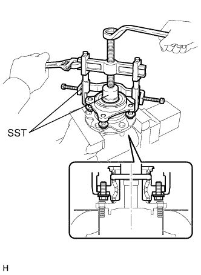

СТУПИЦА ПЕРЕДНЕГО КОЛЕСА > РАЗБОРКА |
| 1. СНИМИТЕ ПОДШИПНИК ЛЕВОЙ ПЕРЕДНЕЙ ПОЛУОСИ С РОТОРОМ ДАТЧИКА ЧАСТОТЫ ВРАЩЕНИЯ КОЛЕСА В СБОРЕ |
|  |
Осторожно закрепите ступицу переднего колеса в тисках между алюминиевыми пластинами.
Снимите подшипник с помощью SST.
| 2. СНИМИТЕ САЛЬНИК СТУПИЦЫ ЛЕВОГО ПЕРЕДНЕГО КОЛЕСА |
С помощью отвертки снимите сальник ступицы переднего колеса.